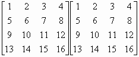
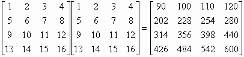

四階矩陣乘法 (4×4 matrix multiplication)
程式編寫日期: 2008年11月28日 修改日期: 2008年12月15日
程式可以計算一個 4 × 4 矩陣及另一個 4 × n 矩陣的乘積，其中 n是正整數。第一個程式限制為輸入數據 的絶對值必須小於1000000的整數，否則計算有可能錯誤，而第二個程式的限制為輸入數據的絶對值必須小於1000的三位小數(最多可以有三位小數)，否則計算有可能錯誤。
程式需要在 REG Lin 模式下執行，因此在選擇新程式位置後，按 5 1 選用REG Lin模式。
注意: 藍色的英文字為統計模式中的變數( n 按 Shift 1 3 Σx 按 Shift 1 2，Σy 按 Shift 1 → 2，Σxy 按 Shift 1 → 3)，FreqOn 按 Shift MODE ← ← 1，E 是按 EXP 。
第一個程式 (299bytes，整數版)
FreqOn: ?→A: ?→B: ?→C: ?→D: ?→X: ?→Y:
; A + E - 7B - 4 DT: C + E - 7D - 1 DT: 1 , X + E - 7Y DT:
?→A: ?→B: ?→C: ?→D: ?→X: ?→Y: 0 , - Σy DT:
, A + E - 7B DT: C + E - 7D ; 0 DT: X + E - 7Y→X:
?→A: ?→B: ?→C: ?→D: A + E - 7B→Y: C + E - 7D→M:
While 1: ?→A: ?→B: ?→C: ?→D: Fix 0:
ARnd(n) + E7B( n - Rnd(n) ) + CRnd(Σx) + E7D( Σx - Rnd(Σx◢
ARnd(Σxy) + E7B( Σxy - Rnd(Σxy) ) + CRnd(Σy) + E7D( Σy - Rnd(Σy◢
; 0 DT: ARnd(Ans) + E7B( Ans - Rnd(Ans) ) + CRnd(X) + E7D( X - Rnd(X◢
ARnd(Y) + E7B( Y - Rnd(Y) ) + CRnd(M) + E7D( M - Rnd(M: Norm 1◢ WhileEnd
第二個程式 (333bytes，三位小數版)
FreqOn: ?→A: ?→B: ?→C: ?→D: ?→X: ?→Y:
; A + E - 10B - 4 DT: C + E - 10D - 1 DT: 1 , X + E - 10Y DT:
?→A: ?→B: ?→C: ?→D: ?→X: ?→Y: 0 , - Σy DT:
, A + E - 10B DT: C + E - 10D ; 0 DT: X + E - 10Y→X:
?→A: ?→B: ?→C: ?→D: A + E - 10B→Y: C + E - 10D→M:
While 1: ?→A: ?→B: ?→C: ?→D: Fix 3:
ARnd(n) + E10B( n - Rnd(n) ) + CRnd(Σx) + E10D( Σx - Rnd(Σx: Norm 1◢ Fix 3:
ARnd(Σxy) + E10B( Σxy - Rnd(Σxy) ) + CRnd(Σy) + E10D( Σy - Rnd(Σy: Norm 1◢ Fix 3:
; 0 DT: ARnd(Ans) + E10B( Ans - Rnd(Ans) ) + CRnd(X) + E10D( X - Rnd(X: Norm 1◢ Fix 3:
ARnd(Y) + E10B( Y - Rnd(Y) ) + CRnd(M) + E10D( M - Rnd(M: Norm 1◢ WhileEnd
例題: 計算下列矩陣的乘積:

按 Prog 1 再按 1 EXE 2 EXE 3 EXE 4 EXE 5 EXE 6 EXE 7 EXE
8 EXE 9 EXE 10 EXE 11 EXE 12 EXE 13 EXE 14 EXE 15 EXE 16 EXE
(第一個矩陣，由左至右，上至下輸入)
1 EXE 5 EXE 9 EXE 13 EXE (輸入第二個矩陣，第一欄的數據)
(顯示90) EXE (顯示202) EXE (顯示314) EXE (顯示426，這四個數值為答案的第一欄)
EXE 2 EXE 6 EXE 10 EXE 14 EXE (輸入第二個矩陣，第二欄的數據)
(顯示100) EXE (顯示228) EXE (顯示356) EXE (顯示484，這四個數值為答案的第二欄)
EXE 3 EXE 7 EXE 11 EXE 15 EXE (輸入第二個矩陣，第二欄的數據)
(顯示110) EXE (顯示254) EXE (顯示398) EXE (顯示542，這四個數值為答案的第二欄)
EXE 4 EXE 8 EXE 12 EXE 16 EXE (輸入第二個矩陣，第二欄的數據)
(顯示120) EXE (顯示280) EXE (顯示440) EXE (顯示600，這四個數值為答案的第二欄)
所以:

計算完結後請按 AC 終止程式。
返回 CASIO fx-50FH、fx-3650P II、fx-50FH II及fx-50F PLUS 程式集
FreqOn: ?→A: ?→B: ?→C: ?→D: ?→X: ?→Y:
A + E - 7B , C + E - 7D ; X + E - 7Y DT: ?→A:
?→B: ?→C: ?→D: ?→X: ?→Y: A + E - 7B→M:
C + E - 7D→A: X + E - 7Y→B: ?→C: ?→D:
?→X: ?→Y: C + E - 7D→C: X + E - 7Y→D:
While 1: ?→X: ?→Y: X + E - 7Y→X: ?→Y: Y:
?→Y: Ans + E - 7Y→Y: Fix 0: Rnd(maxX)Rnd(X) +
E14( maxX - Rnd(maxX) )( X - Rnd(X) ) + Rnd(maxY)
Rnd(Y) + E14( maxY - Rnd(maxY) )( Y - Rnd(Y◢
Rnd(n)Rnd(X) + E14( n - Rnd(n) )( X - Rnd(X) ) +
Rnd(M)Rnd(Y) + E14( M - Rnd(M) )( Y - Rnd(Y◢
Rnd(A)Rnd(X) + E14( A - Rnd(A) )( X - Rnd(X) ) +
Rnd(B)Rnd(Y) + E14( B - Rnd(B) )( Y - Rnd(Y◢
Rnd(C)Rnd(X) + E14( C - Rnd(C) )( X - Rnd(X) ) +
Rnd(D)Rnd(Y) + E14( D - Rnd(D) )( Y - Rnd(Y:
Norm 1◢ WhileEnd